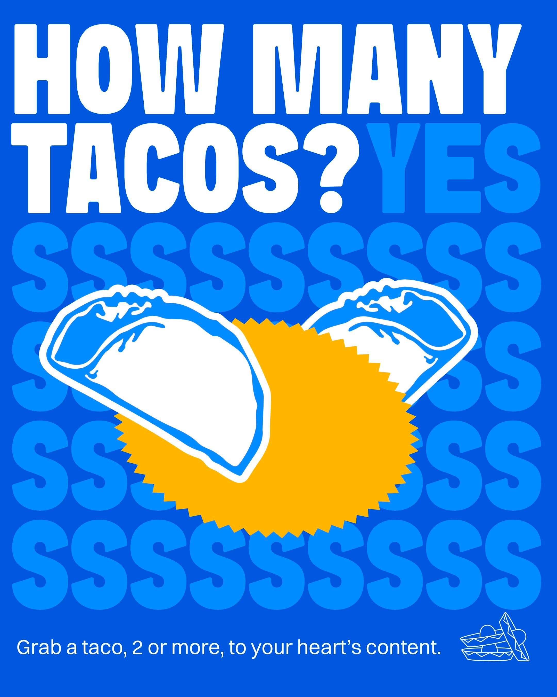
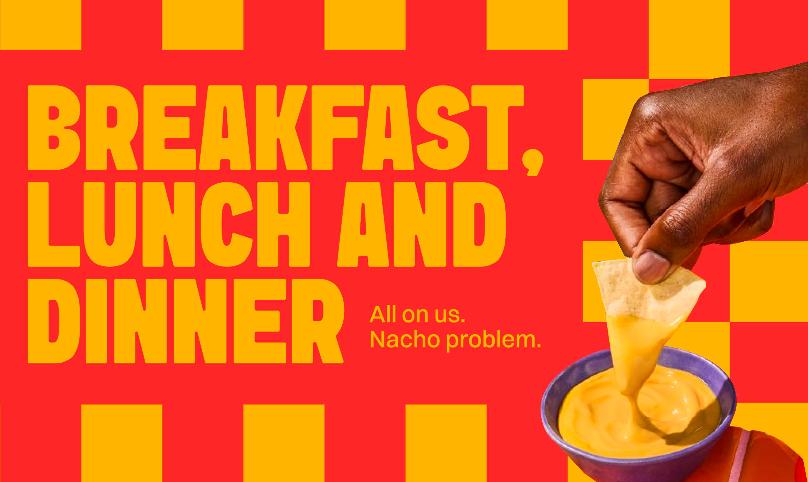
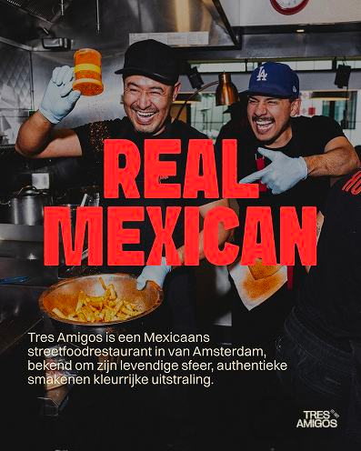
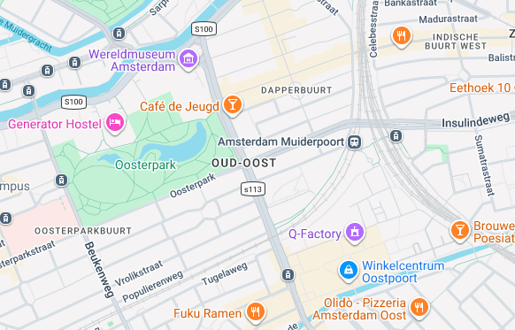

Burritos
Big, warm and loaded with your favourite filling, rice, beans, toppings and sauce.
Fresh burritos, tacos, quesadillas and loaded sides in the new Tres Amigos style. Bright colours, real flavour and a fast casual street food experience.

The old WordPress structure is kept clear and familiar, but the visual layer is rebuilt around the new brand guide: chunky type, bold blocks, Mexican street food cues and strong colour contrast.

Big, warm and loaded with your favourite filling, rice, beans, toppings and sauce.
Street food classics with crunchy, juicy, spicy and fresh combinations.
Grilled, cheesy and easy to share. Add sauce and a side for the full deal.
The new website uses the supplied brand application style as web components: posters, cards, callouts and repeat patterns.




Oost, Zuid, West and Nieuw-West with take away, delivery and dine in options.
